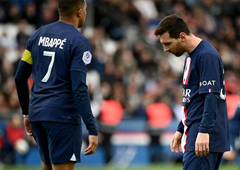

PSG volvió a resbalar y ya padece en Liga: perdió contra Rennes
El club de Lionel Messi y Kylian Mbappé perdió 2-0 en condición de local por jornada 28 de Ligue 1.
PSG recibió en el estadio Parque de los Príncipes a Rennes, donde el conjunto parisino buscaba una victoria para seguir liderando la Ligue 1 de Francia, pero fueron sorprendidos por la visita y salieron derrotados 2-0.
Los parisinos volvieron a padecer en la temporada y pese a tener ahorros en la Ligue 1, han dado ventaja que hace dudar sobre si finalmente les alcanzará para el título.
Esta dura derrota de París Saint-Germain los deja con 66 puntos y su perseguidor Lens ya quedó a nueve unidades, tras acumular 57 unidades.